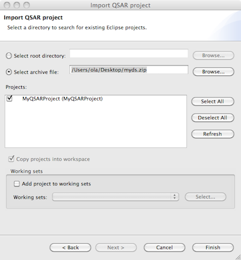

Bioclipse QSAR - Import and Export
Importing a Bioclipse-QSAR project
From the file menu, select Import... then in the wizard select Cheminformatics > Qsar project.
In the opened dialog select "From archive file" and point to the archived Bioclipse-QSAR project.

Exporting a Bioclipse-QSAR project
There are two options to export a Bioclipse-QSAR project.
- On the Overview Page in the QSAR Editor, click "Export QSAR project". This allows for archiving all information in the project to a zip-file.
- Right-click the desired Project in the Bioclipse Navigator and select Export... then in the dialog select Cheminformatics > Qsar project. This opens the same dialog asking for a file to export to as above.